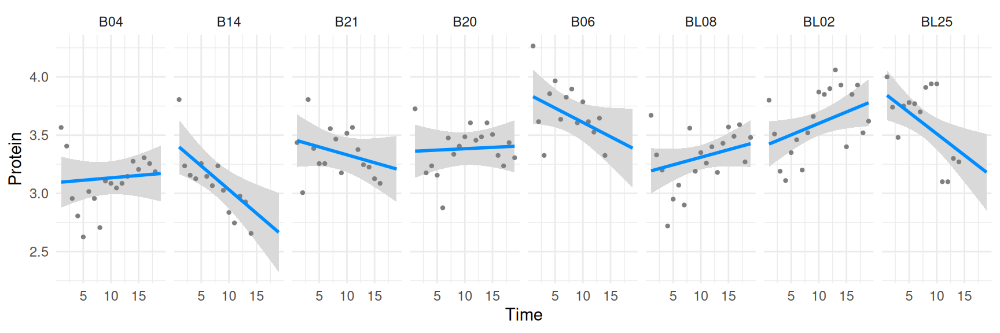
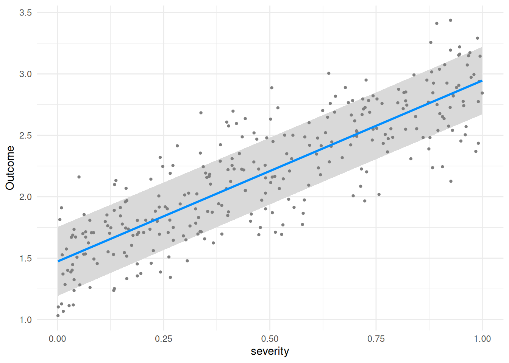

visreg can be used to visualize mixed models, although whether you get confidence intervals or not depends on the package you’re using. I can’t provide a comprehensive listing of all mixed model packages, but:
-
lme4: As of 1.1-27,predict.merMod()supportsse.fit=TRUE, sovisregprovides confidence bands. The rest of the article illustrates how to usevisreg()withlme4. -
nlme: A of 3.1.169,predict.lme()does not supportse.fit. Since it doesn’t provide standard errors,visreg()cannot produce confidence bands (except for contrast plots).
To illustrate, we will work with this random-intercept, random-slope model of data from a study involving the protein content of cows’ milk in the weeks following calving:
Population-level effects (the default)
By default, visreg predicts with re.form=NA: the random effects are ignored altogether, and the plot shows the fixed-effect (population-average) relationship, with a confidence band reflecting uncertainty about the fixed effects only. No extra arguments are needed for this — it’s what you get by calling visreg() normally:
This is the right choice when you want to describe the typical cow, and it’s the plot most people want most of the time.
Conditioning on the estimated random effects
Passing predict = list(re.form = NULL) tells lme4 to condition on the estimated (BLUP) random effects for a specific cow. Combined with by, this lets you plot cow-specific curves — the estimated relationship between protein and time, separately for each cow. For the sake of space, we subset the plot to 8 cows rather than all 79; this can be done by returning, then subsetting, the raw visreg object prior to plotting.
sub_cow <- sample(levels(Milk$Cow), 8)
visreg(fit, "Time", by = "Cow", predict = list(re.form = NULL), plot = FALSE) |>
subset(Cow %in% sub_cow) |>
plot() +
ylab("Protein")
Each cow’s curve now has its own confidence band, but it’s worth being clear about what these bands represent: they reflect the precision with which that cow’s own trajectory is estimated, given its random effects, and are a different quantity than the population-level band above, which reflects uncertainty about the fixed effects for a typical cow.
Conditioning on some, but not all, random effects
When a model has more than one grouping factor, re.form can also be a formula naming just the grouping factor(s) you want to condition on, letting you marginalize over the rest. This isn’t an option for the milk yield model above, which has only one grouping factor (Cow), so let’s simulate a small artificial example involving patients seen at different clinics, and both patients and clinics have their own random intercepts:
set.seed(1)
n_clinic <- 15
n_patient <- 20
n <- 300
clinic <- factor(sample(1:n_clinic, n, replace = TRUE))
patient <- factor(sample(1:n_patient, n, replace = TRUE))
severity <- runif(n)
b_clinic <- rnorm(n_clinic, sd = 0.5)
b_patient <- rnorm(n_patient, sd = 1)
outcome <- 2 +
1.5 * severity +
b_clinic[clinic] +
b_patient[patient] +
rnorm(n, sd = 0.3)
dat <- data.frame(outcome, severity, clinic, patient)
fit2 <- lmer(outcome ~ severity + (1 | patient) + (1 | clinic), data = dat)Conditioning on clinic random effects while marginalizing over patient random effects:
visreg(
fit2,
"severity",
predict = list(re.form = ~ (1 | clinic)),
cond = list(clinic = levels(clinic)[1])
) +
ylab("Outcome")
This differs from both the fully marginal plot (re.form=NA, the default) and the fully conditional one (re.form=NULL, conditioning on both clinic and patient): it reflects the uncertainty coming from random patients, but is specific to the clinic being examined.